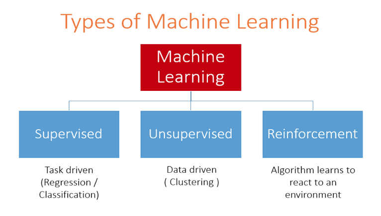

Overview of Machine Learning Techniques
Created for
Created by
2018 - 2021,

ML Algorithm vs Model - concepts clarification
ML Algorithm vs Model - concepts clarification
What is Algorithm in ML?
- The word "algorithm" in machine learning denotes the same concept as in Computer Science.
- ML algorithms basically performs "pattern recognition". They "learn" from data (i.e. "fit" on a dataset).
- ML algorithms are used to create a machine learning "model".
What is "model" in ML?
- An ML "model" is the output of a ML algorithm run on particular data
- The model is the "thing" that is produced after running a ML algorithm on particular training data.
- The model represents the rules, numbers, and any other algorithm-specific data structures required to make predictions
- For example, the "decision tree" algorithm run on particular data results in a model comprised of a tree of if-then statements with specific values.
Types of ML Algorithms
Types of ML Algorithms
Overview
- There are hundreds of Machine learning algorithms. But we can group them in three basic types: 
{kind=link}
Classification map of ML Algorithms
- Most classification of ML Algorithms types are based on
- How the algorithm works?
- What types of task is an algorithm suitable for?

Supervised Learning Algorithms
Supervised Learning Algorithms
Overview
- Supervised ML algorithms are the most used algorithms in practice.
- Supervised ML is when we have historical data with mapped input => output pairs and we use an algorithm to learn the mapping function from the input to the output.
- Input data are called input variables (X), or free variables
- Output data is called target or dependent variable (Y)
- The goal is to approximate the mapping function: $ {Y = f(X)} $, so well that when we have new input data (X) we can predict the output variables (Y) for that data.
- The model is trained until it can detect the underlying patterns and relationships between the input data and the output labels, enabling it to yield accurate labeling results when presented with never-before-seen data
- The job of modeling algorithm is to find the best mapping function, such that will minimize the error on prediction.
Problems that solves
- Two main problems categories:
- classification
- predicting a discrete class label output for an example.
- example: determining if an email is spam or not
- regression
- predicting a continuous quantity (value) output for an example.
- example: predict the price of a house
Popular Algorithms
- Nearest Neighbor Algorithm
- Decision trees
- Linear Regression
- Logistic Regression
- Support vector machines
- Naive bayes classifier
- Back Propagation Neural Network
Unsupervised Learning
Unsupervised Learning
What?
- We have only input data, that are not labeled
- We don't know in advance the right answers to the training data.
- Our goal is not to find a mapping between input and output data at all. There is no "supervisor"
- The learning algorithm can only use similarities between input data to group (cluster) it
Overview - Picture

Popular Algorithms
- Apriori algorithm
- k-Means
- Neural Networks
- Hebbian Learning
- Self-organizing map
Problems that solves
- To find clusters (patterns, regularities) in the input data
- Extract common rules(patterns)
- To discover structures in the input space
- Density estimation
- Or just to explore the dataset
Applications
- Dimensionality reduction
- To project a high-dimensional data set into a lower-dimensional one
- Document Clusterization
- The cluster algorithm can find "similar" documents. Most common, that similarity is according to a common words(tokens) in a predefined lexicon
- Customer segmentation
- A telco company has huge amount of data of its customers
- Demographic and personal data, how long they speak and with whom, ...
- The company may use clustering algorithms to see the groups of customers with similar attributes
Applications:
- Image compression
- The pixels of an image are the input data
- The clustering algorithm can group pixels with similar colors
- Can find groups of pixels, forming repeated components of the picture
- Bioinformatics and Gene Engineering
Semi-supervised Learning
Semi-supervised Learning
Overview
Semi-supervised learning has tremendous practical value. In many tasks, there is a paucity of labeled data. The labels y may be difficult to obtain because they require human annotators, special devices, or expensive and slow experiments.
Introduction to Semi-Supervised Learning, 2009.
- Semi-supervised Learning is performed when we have a small number of labeled examples and a large number of unlabeled examples.
- The goal of Semi-supervised Learning is the same as of supervised learning
Reinforcement Learning
Reinforcement Learning
Overview
In reinforcement learning, the learner is a decision-making agent that takes actions in an environment and receives reward (or penalty) for its actions in trying to solve a problem. After a set of trial-and- error runs, it should learn the best policy, which is the sequence of actions that maximize the total reward.

- Reinforcement Learning is inspired and closely connected with Behaviorist psychology and finds application in most ML tasks.
These slides are based on
customised version of
framework